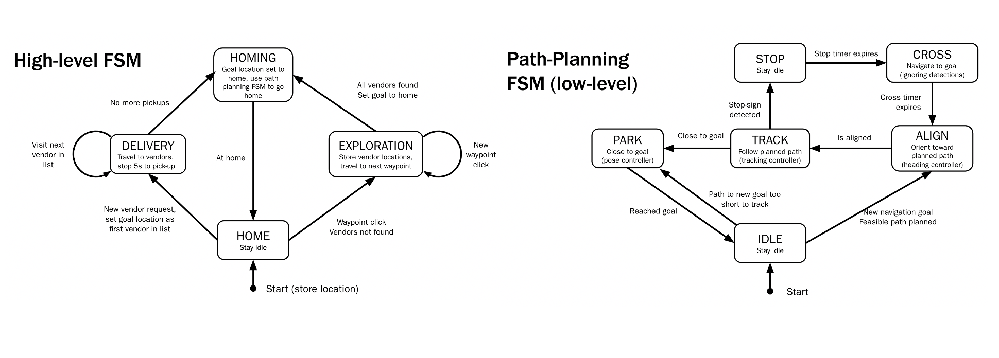

Turtlebot Autonomous Food Pickup/Delivery
This project was to develop a ROS package for a Turtlebot to pick up and deliver requested food. The robot explores an unknown world using Lidar and SLAM node gmapping for robot pose and occupancy grid. It explores and maps the environment by following given rviz waypoints and calculating shortest path solution from either A* or bidirectional rrt. While exploring, the robot uses a pre-trained CNN detector to recognize different food vendors and keeps track of their positions to revisit later. The CNN detector is also used to detect stop signs and a dog and carry out tasks such as stopping for a pre-determined time and barking at the dog.
Computer Vision
Detecting food location requires camera calibration using stereo vision process. We impose an epipolar constraint to fuse images and generate point correspondences for the location of the food vendors. By estimating the intrinsic parameters of a camera, we are able to accurately project any point in the real world onto the pixel image output by the camera.
Robotic Sensors
We use Lidar range data to map an indoor environment. Noise on measurements are filtered using gaussian distribution and points in a range scan are fitted via line extraction to define the border of the indoor walls. We use “split-and-merge” algorithm to extract line from Lidar data.
Software
Software was coded in Python. We use ROS sub/pub structure to communicate, receive, and process requests for delivery. Following is our Finite State Machine and github respository link.
So what does this robot do?
Here is a clip of our robot navigating through an unknown map and carrying out pick up and deliver quest. The robot indicates it has “picked up” and stored the food vendor location by placing markers on rviz. After mapping out the environment and storing the locations, it will carry out the task of delivering requested items by traveling to the vendor again and returning to home base. Due to COVID restrictions, the simulation of the robot was carried out on virtual Gazebo environment, but the ROS package will run the same on a physical bot.